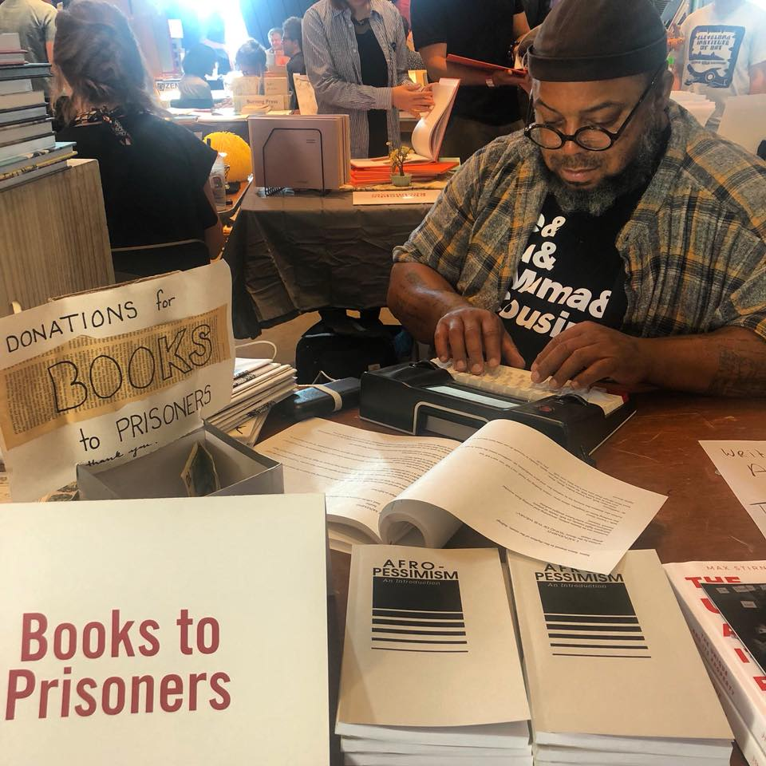

Guide to Kulchur
Cooperative book and print shop.
Home to Cleveland Books 2 Prisoners, GTK Press, and The
Cleveland Zine Archive.
Active 2013-2019.
Photo Album
Oral History by RA Washington
Guide to Kulchur co-founder
RA: I’d always wanted to be part of, or start some DIY-type, collective-type things. You know, I liked Baraka'sBARTS school in Harlem after Malcom died. I had some of the play bills from that space; as a kid, my aunt had them, so she gave them to me. I always wanted to have those spaces. The very first time I tried to organize something like that was called [?] Arts, and it was a writers’ intensive. For nine weeks we would study something, we would try to attempt to be real rigorous about the study of one thing. We had poets like Kisha Nicole Foster,Michelle Smith Quarles,Josiah Quarles,Eris Eady,D.L. Ware, all these Black writers. And that went pretty good. I found myself in Tremont, and I met Erin Kray. She had this gallery called Inside-Outside Gallery. She didn’t own it, some weirdo owned it, but she ran it, and she was doing crazy shit. She had a Daniel Johnston drawing show there, she had a street artist named Swoon up in there. A lot of cool happenings. And she invited me to use the back room to make a record store/bookstore called Viva Libre. So we did it, and it was goin’ alright, we were doing shows there and we had a nice thing going. But the weirdo that owned the place sexually harassed Erin, or something happened weird. She wanted to sell it eventually, but we got kicked out of there.
-
The Church (of Ayler)
Exterior view of the Church. Image courtesy of Lou Muenz.
RA: There was a Spanish church across the street. It was painted all white with a red door. And inside it was completely red; carpet, ceiling, it had the most dank red carpet. And we turned that into the Church of Ayler. We had a curatorial staff made up of Cleveland luminaries like John G.,Jake Kelly was a part of it, like all these guys before any of us really had anything going. We just knew what was happening. We had Dan Deacon play a show before he blew. We had Sunburned Hand of the Man. We had Magic Markers, we had Lightning Bolt, it was just this crazy space. And every show was super packed, it was hot as fuck in there, and we paid the bands 100% at the door. We had it worked out so if you came to our shows, you’d have a little discount at the corner store—it was right here on the corner of 14th and Auburn. We did that for like maybe 19 months and then we got in trouble with the city. We had some underage drinking tickets and that began the beginning of me catching significant consequences for DIY action. So I kinda chilled off it for a while.
-
The Formation of Guide to Kulchur
RA: In 2013 I was working at this French fusion bistro that had, like, risotto cakes made of Brussel Sprouts and weirdo shit, and the chef thought of himself as a poet, and I was his sous chef. I liked the job because we had this lunch service and nobody would come, so it would just be me and him chopping it up. I wrote Run Along, the Fire Says, one of my novels, at that bar, right there while doing the lunch shift. I worked a lunch shift and then we’d transition to dinner, so I’d be there like 15 hours a day and it was great—I had something to do, I could leave it there, I had money, I was writing, it was fine. Something happened with those guys… I was supposed to go on this honeymoon vacation with Dr. Bly so I requested time off, and they said, “Cool no worries you can have your job when you come back, we got it covered.” We get to the airport and she can’t get on the plane because her passport is like one month from being expired. So we cancel everything. I call work that same day like, “Hey I could work tonight,” and they’re like, “Yeah… we moved in another direction. Come pick up your check.” I went and got my check, it was $915.75 after taxes. I’m sitting there at the Gypsy Bean Coffee Shop and I’m looking across the street from Capitol Theatre and I’m like damn, I gotta come back home and tell her no we’re not going on the trip, I don’t have this job anymore. I wasn’t looking forward to doing it.

Interior view of the shop. Image courtesy of Guide to Kulchur.
-

RA manning a Books 2 Prisoners table at the 2018 BOUND Art Book + Zine Fair.
Image courtesy of Guide to Kulchur.
I see this empty storefront, and the sign says Available For Rent with a phone number. I take a picture of it, and on the drive home thinking, “Man, don’t I have a business plan about a bookstore in my files or something?” Get home, find the old Viva Libre bookstore plan, find this poster I made for a one-off magazine I called Guide to Kulchur. There was one issue. The photographer Lou Muenz had work in it, it had vellum covers, it was pretty dope. We were proud of it, we just couldn’t muster enough effort to get another issue, but I loved the name. I called it Guide to Kulchur and I started choppin’ it with Dr. Bly. They added the zine archive, got a press, boom boom boom. And we just started rocking Guide to Kulchur like that.
About a year into it, our marriage was falling apart, and the last thing she told me she was like, “If you don’t get some people to help you do this, we’re getting a divorce.” The only people who were around were these anarchist kids that threw a book fair at Guide to Kulchur—a really successful one. They brought all these West Coast anarchists, all these East Coast anarchists, there were talks and shit. It was dope. Well organized, well done, and I was like, “Man these guys down here, maybe I’ll ask them.” So we start talking about it being a co-op and somebody had heard a presentation from Kent State about the Commonwealth Cooperative Loan Fund. So we got in touch with those guys and began the process of becoming a co-op. It took us about two years to get the funding, but in the meantime, we did, I don’t know, 430 events in a year. The writeups were good, we got some support from the Cleveland Artist Work Fellowship, they gave us $20,000 and we spent it on Books 2 Prisoners. We were feeling pretty good about it. It was a dynamic space, man.
-
A Community Resource
RA: When Tanisha Anderson and Tamir Rice got murdered, we had some community talkback sessions and grief sessions moderated by M. Carmen Lane, this phenomenal facilitator and all-around super-being. There were like 300 people in there. And the police were surrounding the bookstore and national media was there… it was a little bit of a circus. We built a coalition, we brought council members down in the basement, it was in the Washington Post, and people started to peacock and vie for who was going to be the next Fred Hampton. Some people were even doubling down on the archetype of Moses, like, “I’m gonna get you to the Promised Land.” And I’m like, that didn’t work out for the dude though [laughs]. It was just a wild scene man, we kept to our principles. We weren’t trying to lead anything, we were just service-oriented. We printed all the flyers, we used our resources to get refreshments for the meetings, we provided the space. We printed stuff for them to sell, you know.
Black Lives Matter had a convention in Cleveland, and they listed us as an ally space, but not as a Black space. They said that it was a cult of white guys, but the owner was Black, so you can get some free resources. That’s what it said in the brochure. And I was like man that’s crazy. We had that dynamic too. Cause if you come up to a building and you see like sixteen crust punk white dudes sitting there tattooed up, dusty ass doc martins—you know the kind—that we always fall in love with, because we think they might play guitar well, or they might actually believe in the poetry they write and shit… They really know how to blink, it’s like their thing, they blink at you… So you know, Black folks weren’t trying to come around there. It just wasn’t an intersectional space. And anytime I tried to bring in Black folks that were radical, it would just always go sideways. So that was a dynamic. We really wasn’t getting any East Side love, but we was up in the West Side. That’s when I started being like man, it kinda feels like I’m a West Side mammy. Like an anarchist, crust punk mammy. I like the music and I get along with the people, and I got tattoos, I like cocaine, you know that kinda vibe. I dunno man, I just felt like I was over-extended.
-
A Nebulous Space
View of the Sally Tatnall Black Box Image courtesy of Guide to Kulchur.
RA: Then we got the cooperative loan. We decided as a group that we would pay each other instead of hiring a sales manager to build the press, so we could be more sustainable. We had all these projections, but we didn’t factor in the sales manager. Like I could get gigs, but I couldn’t get someone on commission or salary. But we didn’t use our money that way. We just paid each other $1500 for as long as we could and then the printers broke and we started missing payroll and money was getting convoluted, it was getting mixed up with personal and private and business. It was just a big mess, man. The RNC happened, and I’m on Al Jazeera, and I’m on NPR, and I’m feeling the cult of personality of it. I’m like, yeah, finally shining, a me type vibe. But you can distort a thing when you want something from it. Or you haven’t really considered what’s gonna make it sustainable for you.
So that was going on. We started a record store called Young Kings in Hingetown. We made a deal with the developers, got the space, but didn’t even really hammer out what it would be like. We basically had to build it out, all the infrastructure in the space, and pay rent. It didn’t take off because we couldn’t finish the buildout. We were literally a shop without lights at night, no power. Couldn’t play music in there, there’s no power! And people were looking at me like, “What the fuck are you doing,” but I didn’t care. Fred Bidwell comes in like, ‘why are you doing all this non-profity shit. You should just be a non-profit.’ He’s like, ‘Look… if you organize a nonprofit out here, I’ll introduce you to the foundations.’ I was like, bet.
Theaster Gates has the Stony Island Arts Bank and all that. So I went on his website, I looked at his mission statement, I found some Ezra Pound writing that I liked that was in Guide to Kulchur, and I just kinda blended an amalgamation of it, made a brochure with the print shop, brought it to him, and he was true to his word. Next thing I know I was meeting with Cleveland Foundation, Gund Foundation, you know what I mean? And it’s up! I got a board, started rocking, we file, but we can’t get our sea legs under us. This is the third move we’ve had, and we just can’t muster it. And I can’t do like 90 hours anymore. Six months in I come to them and I’m like, “Hey man, you know, I think I need to step down.” But I didn’t come clean, I didn’t say “I’m sick,” or “I need some help,” I just was like, trying to game the president of the board by saying, “hey it’s time for you to shine.” I wasn’t transparent, so I didn’t get the result I wanted. So I stayed on, and it then it just became a shit show. We got a strategic planning grant and I misused the funds from it… like $3,500 of it. I misused some private donations. They found out, they fired me, and that was pretty much the end of Guide to Kulchur.
Now it just sits in this nebulous space of like, ‘Oh what a messy project.’ I mean, I think people think it was good, but at the same time, so embarrassingly messy. That’s the extent of actual physical spaces. You know, we started Cleveland Tapes for a similar premise. We weren’t trying to be a record label per se, we we’re just trying to put some of our own records out. And it’s probably been the longest thing I’ve ever been up to, out of something like 50 different artist projects.
LEILA: Do you want to share a bit more about what you’re up to in your personal practice?
RA: A lot of things are still community ideas, but I’m starting a POC-streaming service called Black Blur based on some of the writings of Fred Moten. I’ve been emailing him for three months trying to get the wording right, you know, ask for him to bless the project. I got that going on, and Mourning [A] BLKstar. On November 6th we’re gonna premier a 5-part docuseries with live music and whole lotta other special things called The Mourning [A] BLKstar Residencies. It’s gonna premier on the Black Blur Streaming platform. Also, two of my novels are in pre-production to become films. So I’m doin’ a lot of script-revising and getting to ask questions that make me feel uncomfortable about what they’re about to do to my book. It’s an interesting time to be alive because you could literally make anything now. You don’t really need pro tools. You don’t really need the things they tell you that you need in school. It will be interesting to see what happens, right?
-
A Word to Those Involved
RA: I just wanted to say an aside for the people that worked at Guide to Kulchur, and worked on the board, and worked in the co-op, and any people that were affiliated with it: What an amazing group of individuals that were committed to cooperative work and, you know, really should be applauded for taking the risk that we did as a group, and really should be celebrated, and feel proud of the work. I hope that one day the way we all show up in the world can lead to people really looking at that period of time in a positive light, and hopefully I can walk back some of the stain and my own personal shortcomings that I brought to it. But if I cannot do that, I’m hoping that some concept of restorative justice and the balance and nuance in how we tell stories may show up. And I hope that this archive project can add some of that to it.
We have to be mindful of the thigs that we commit to, of course, but we have to also understand that within a capitalist frame, if you’re an artist, you’re gonna be asked to do a lot of social service work. Are you supposed to be doing it? Is that something that your soul needs to be doing? Do you understand what that commitment takes for your personal resources? We need to make things more sustainable, and we need to cycle through leadership in those situations. Maybe on a nine-month or six-month cycle, where someone acts as the facilitator for the conversations, and you change that voice. Those are the things I learned about doing this project.
And to all the people that decided that it was smart to build a cult of personality around a very willing, and very external-validation-seeking, marginalized person: I would just like to say that what happened with that $3,500 was egregious, sure, but it got paid back. No one ever came back and said, you know, ‘You meant this to me; You did this.’ They just left me languishing in an inability to work in a city that I gave my whole heart to. So I’m in a place now where I’m trying to figure out, do I say fuck this fucking city? Or do I accept the beating and hopefully stay courageous enough to not be afraid of the smoke and really own the work—the good and the bad of it? Maybe it can help inform another opportunity like that later down the line.
Aight. This was RA Washington, co-founder of Guide to Kulchur: Text, Art, and News. We put on over 700 events over the course of six years and we put out 35 books, including the first books by and for Black women writers. A lot of the people that worked there are still artists, and still making the same or even greater contributions to this society. I feel very proud of how they were able to take the information that they learned from Guide to Kulchur and make something new that was informed by some of the mishaps and the bad strategy of that. I feel positive about that, and I feel pretty confident that I will never be a part of a DIY situation again.
• • •